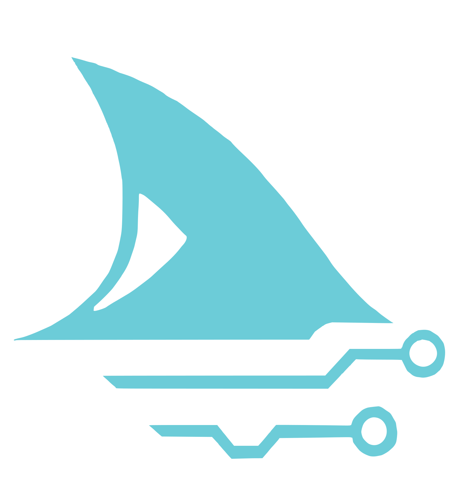

A world built on chips
Phones, cars, medical devices, AI datacentres: every one depends on semiconductors. The global chip industry is heading towards a trillion-dollar market, and demand for people who can design hardware far outstrips supply.

SHaRCUniversity of Sheffield · Student-led
SHaRC, Sheffield Hardware and Reconfigurable Computing, takes students from their first logic gate to manufactured chips: FPGA prototyping, RISC-V system-on-chip design, and open-source ASIC tapeouts.
// who we are
SHaRC is a student-led group at the University of Sheffield focused on developing microelectronics hardware. We give students hands-on experience of modern digital hardware design, including emerging fields such as RISC-V and open-source chip design, through lab sessions, student-led seminars, cross-year collaboration, and real engineering deadlines.
Members don't just simulate. They write RTL, verify it, prototype on FPGAs, and send designs to be manufactured on real silicon through programmes like Tiny Tapeout: a journey very few undergraduates anywhere get to make.
Academic lead: Mohammad R Eissa · School of Electrical and Electronic Engineering
Define the architecture
Verilog / SystemVerilog design
Simulation & testbenches (CoralTB)
Prototype on real hardware
Manufactured silicon
// why hardware, why now
Phones, cars, medical devices, AI datacentres: every one depends on semiconductors. The global chip industry is heading towards a trillion-dollar market, and demand for people who can design hardware far outstrips supply.
The UK is a world leader in chip design and IP (Arm started here), and the government's National Semiconductor Strategy is investing £1 billion in the sector. The bottleneck isn't ambition. It's skilled engineers.
Open PDKs and tools like those behind Tiny Tapeout have collapsed the cost of making a chip from millions to tens of pounds, putting real tapeouts within reach of students. SHaRC is the UK's leading student group doing exactly that.
SHaRC works alongside organisations like UKESF to close the UK semiconductor skills gap, and our members graduate having already shipped silicon.
// project teams 2025–26
Our first-year runway: hardware implementations of cryptographic algorithms on FPGA, including cipher-core-lite, an encryption/decryption core with a UART interface, and a silicon-bound ASCON lightweight-crypto accelerator. No prerequisites: members learn digital design, embedded programming and the route to Tiny Tapeout from zero.
An SoC recreation and enhancement of the Apple IIe: CPU, memory and video built from the ground up. The team learns Verilog in a dedicated RTL sandbox while drafting the system specification, recreating the machine that defined home computing.
The Ripple-32 microcontroller SoC, built entirely with open-source EDA tools. Its
rp_rv32i_sc_wb
core implements the full RV32I instruction set in a single-cycle microarchitecture with a
Wishbone B4 master interface, packaged with FuseSoC and verified with cocotb unit testbenches.
A polyphonic, wavetable-based synthesiser peripheral in pure digital logic: oscillators, envelopes and filters on FPGA. Functional specification complete; RTL in development.
// flagship
In summer 2024, five Sheffield electronics students set out to recreate a video game system from the gate level up. The result is SHaRC's premier ASIC: an RS-funded, open-source retro gaming chip manufactured on Tiny Tapeout 10, with a cocotb verification flow, an interactive gate-level 3D demo, and a feature on RS DesignSpark.
Open-source IP and tooling we build and maintain, free for anyone to use:
// on real silicon
Every one of these was designed by students and manufactured on a multi-project wafer through Tiny Tapeout, on the open-source SkyWater SKY130 and GlobalFoundries GF180MCU process design kits. Click a chip to flip it over.
Retro game console ASIC
flip ↻PPU, APU, sprite engine and a built-in dragon mini-game, with NES controller input. The flagship: a video game system recreated from the gate level.
25 MHz · Verilog repo →Demoscene chip
flip ↻Our logo, drawn live over VGA by dedicated silicon: palette, sync generator and bitmap ROM. Art you can probe with an oscilloscope.
25 MHz · Verilog repo →RISC-V game-pad peripheral
flip ↻Reads button states from SNES and NES controllers as a memory-mapped peripheral for the TinyQV RISC-V CPU. Our RISC-V peripheral competition entry.
64 MHz · Verilog repo →Serial IP test chip
flip ↻The Byte-Sized Serial UART: SHaRC's in-house UART IP with TX, RX and FIFO, proven in silicon so other projects can reuse it with confidence.
64 MHz · Verilog repo →Memory controller tile
flip ↻SPI RAM reader with VGA timing output: the test vehicle for SHaRC's SPI memory controller block, switchable between SPI and VGA modes on the same pins.
25 MHz · Verilog repo →4-bit CPU
flip ↻The Aeolus 4-bit CPU, loading its programs from QSPI flash. Our first chip on GlobalFoundries' 180 nm open PDK, and the seed of the tetra-soc project.
30 MHz · Verilog repo →Each Tiny Tapeout tile is roughly 160 × 100 µm of silicon. Small chip, real fab, full flow: RTL, verification, hardening, sign-off, manufacture.
// receipts
Student designs manufactured on real silicon across five Tiny Tapeout shuttles and two open PDKs (SkyWater SKY130 and GlobalFoundries GF180MCU), establishing Sheffield as the leading UK student society for chip design. See the silicon ↑
Hosted at the University of Sheffield in March 2026: 126 participants, open to any university student with no prerequisites, and the largest workshop in Tiny Tapeout history.
Our entry reached the finals of the EPC Hammermen David K Harrison Student Prize 2025.
Competed in the RISC-V peripheral design competition with a Retro-Pad game controller peripheral for the TinyQV RISC-V CPU.
Competing in the Partcl & Hudson River Trading macro placement challenge, where chip design meets algorithms and optimisation.
// what members get
Weekly lab sessions, student-led seminars and project deadlines build real digital design capability: RTL, verification, FPGA bring-up, physical design and team engineering practice.
Cross-year collaboration, regular socials, and direct contact with industry at our Semiconductor Skills Meetup and workshops. An inclusive, supportive environment, where most members start with zero hardware background.
SHaRC members have gone on to roles at Arm, Meta, EnSilica, P&G, Morgan Stanley and Airbus, plus funded research through Sheffield's SURE scheme. "I taped out a chip as an undergraduate" is a sentence that opens doors.
// events & life at SHaRC
The UK's first, and the largest in Tiny Tapeout history: 126 students from any university, no prerequisites, designing chips in a day. We plan to run it again, so follow us to hear about the next one.
Industry and academia in one room: career insight from working chip designers, networking for students, and a showcase of what student silicon can do.
Live FPGA and RISC-V demos at the University's flagship Diamond building celebration, putting student hardware in front of the whole university community.
Weekly lab sessions, student-led seminars on everything from RTL tricks to chip economics, and regular socials. The community is the point: chips are how we make friends.
Photos and event announcements live on our Instagram and LinkedIn. Follow along to see the lab in action and catch the next event.
// industry & academia
Industry partners have joined our meetups and workshops, offered career insight, and seen student engineering delivered to real deadlines, like our RS-funded TinyTapeStation. We've been approached to help other universities start similar initiatives.
Sponsorship and collaboration gets you early access to students who already design silicon, brand presence at high-visibility events, and a direct channel into the next generation of UK semiconductor engineers.
// no prerequisites
Whether you've never written a line of Verilog or you dream in waveforms, there's a team for you. First-years start on ANCHOR, our beginner-friendly FPGA project, and the path leads all the way to tapeout.